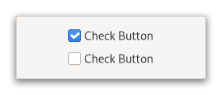
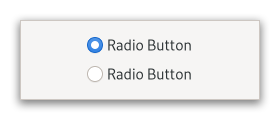

Class
GtkCheckButton
Description [src]
class Gtk.CheckButton : Gtk.Widget {
parent_instance: GtkWidget
}A GtkCheckButton places a label next to an indicator.

A GtkCheckButton is created by calling either gtk_check_button_new()
or gtk_check_button_new_with_label().
The state of a GtkCheckButton can be set specifically using
gtk_check_button_set_active(), and retrieved using
gtk_check_button_get_active().
Inconsistent state
In addition to “on” and “off”, check buttons can be an “in between” state that is neither on nor off. This can be used e.g. when the user has selected a range of elements (such as some text or spreadsheet cells) that are affected by a check button, and the current values in that range are inconsistent.
To set a GtkCheckButton to inconsistent state, use
gtk_check_button_set_inconsistent().
Grouping
Check buttons can be grouped together, to form mutually exclusive groups - only one of the buttons can be toggled at a time, and toggling another one will switch the currently toggled one off.
Grouped check buttons use a different indicator, and are commonly referred to as radio buttons.

To add a GtkCheckButton to a group, use gtk_check_button_set_group().
CSS nodes
checkbutton[.text-button]
├── check
╰── [label]
A GtkCheckButton has a main node with name checkbutton. If the
GtkCheckButton:label or GtkCheckButton:child
properties are set, it contains a child widget. The indicator node
is named check when no group is set, and radio if the checkbutton
is grouped together with other checkbuttons.
Accessibility
GtkCheckButton uses the GTK_ACCESSIBLE_ROLE_CHECKBOX role.
Instance methods
gtk_check_button_get_child
Gets the child widget of button or NULL if GtkCheckButton:label is set.
since: 4.8
gtk_check_button_get_label
Returns the label of the check button or NULL if GtkCheckButton:child is set.
Methods inherited from GtkAccessible (10)
gtk_accessible_get_accessible_role
Retrieves the GtkAccessibleRole for the given GtkAccessible.
gtk_accessible_reset_property
Resets the accessible property to its default value.
gtk_accessible_reset_relation
Resets the accessible relation to its default value.
gtk_accessible_reset_state
Resets the accessible state to its default value.
gtk_accessible_update_property
Updates a list of accessible properties.
gtk_accessible_update_property_value
Updates an array of accessible properties.
gtk_accessible_update_relation
Updates a list of accessible relations.
gtk_accessible_update_relation_value
Updates an array of accessible relations.
gtk_accessible_update_state
Updates a list of accessible states. See the GtkAccessibleState
documentation for the value types of accessible states.
gtk_accessible_update_state_value
Updates an array of accessible states.
Methods inherited from GtkActionable (6)
gtk_actionable_get_action_name
Gets the action name for actionable.
gtk_actionable_get_action_target_value
Gets the current target value of actionable.
gtk_actionable_set_action_name
Specifies the name of the action with which this widget should be associated.
gtk_actionable_set_action_target
Sets the target of an actionable widget.
gtk_actionable_set_action_target_value
Sets the target value of an actionable widget.
gtk_actionable_set_detailed_action_name
Sets the action-name and associated string target value of an actionable widget.
Methods inherited from GtkBuildable (1)
Properties
Gtk.CheckButton:use-underline
If set, an underline in the text indicates that the following character is to be used as mnemonic.
Properties inherited from GtkWidget (34)
Gtk.Widget:can-focus
Whether the widget or any of its descendents can accept the input focus.
Gtk.Widget:can-target
Whether the widget can receive pointer events.
Gtk.Widget:css-classes
A list of css classes applied to this widget.
Gtk.Widget:css-name
The name of this widget in the CSS tree.
Gtk.Widget:cursor
The cursor used by widget.
Gtk.Widget:focus-on-click
Whether the widget should grab focus when it is clicked with the mouse.
Gtk.Widget:focusable
Whether this widget itself will accept the input focus.
Gtk.Widget:halign
How to distribute horizontal space if widget gets extra space.
Gtk.Widget:has-default
Whether the widget is the default widget.
Gtk.Widget:has-focus
Whether the widget has the input focus.
Gtk.Widget:has-tooltip
Enables or disables the emission of the ::query-tooltip signal on widget.
Gtk.Widget:height-request
Override for height request of the widget.
Gtk.Widget:hexpand
Whether to expand horizontally.
Gtk.Widget:hexpand-set
Whether to use the hexpand property.
Gtk.Widget:layout-manager
The GtkLayoutManager instance to use to compute the preferred size
of the widget, and allocate its children.
Gtk.Widget:margin-bottom
Margin on bottom side of widget.
Gtk.Widget:margin-end
Margin on end of widget, horizontally.
Gtk.Widget:margin-start
Margin on start of widget, horizontally.
Gtk.Widget:margin-top
Margin on top side of widget.
Gtk.Widget:name
The name of the widget.
Gtk.Widget:opacity
The requested opacity of the widget.
Gtk.Widget:overflow
How content outside the widget’s content area is treated.
Gtk.Widget:parent
The parent widget of this widget.
Gtk.Widget:receives-default
Whether the widget will receive the default action when it is focused.
Gtk.Widget:root
The GtkRoot widget of the widget tree containing this widget.
Gtk.Widget:scale-factor
The scale factor of the widget.
Gtk.Widget:sensitive
Whether the widget responds to input.
Gtk.Widget:tooltip-markup
Sets the text of tooltip to be the given string, which is marked up with Pango markup.
Gtk.Widget:tooltip-text
Sets the text of tooltip to be the given string.
Gtk.Widget:valign
How to distribute vertical space if widget gets extra space.
Gtk.Widget:vexpand
Whether to expand vertically.
Gtk.Widget:vexpand-set
Whether to use the vexpand property.
Gtk.Widget:visible
Whether the widget is visible.
Gtk.Widget:width-request
Override for width request of the widget.
Properties inherited from GtkAccessible (1)
Properties inherited from GtkActionable (2)
GtkActionable:action-name
GtkActionable:action-target
Signals
Signals inherited from GtkWidget (13)
GtkWidget::destroy
Signals that all holders of a reference to the widget should release the reference that they hold.
GtkWidget::direction-changed
Emitted when the text direction of a widget changes.
GtkWidget::hide
Emitted when widget is hidden.
GtkWidget::keynav-failed
Emitted if keyboard navigation fails.
GtkWidget::map
Emitted when widget is going to be mapped.
GtkWidget::mnemonic-activate
Emitted when a widget is activated via a mnemonic.
GtkWidget::move-focus
Emitted when the focus is moved.
GtkWidget::query-tooltip
Emitted when the widgets tooltip is about to be shown.
GtkWidget::realize
Emitted when widget is associated with a GdkSurface.
GtkWidget::show
Emitted when widget is shown.
GtkWidget::state-flags-changed
Emitted when the widget state changes.
GtkWidget::unmap
Emitted when widget is going to be unmapped.
GtkWidget::unrealize
Emitted when the GdkSurface associated with widget is destroyed.
Signals inherited from GObject (1)
GObject::notify
The notify signal is emitted on an object when one of its properties has its value set through g_object_set_property(), g_object_set(), et al.
Class structure
struct GtkCheckButtonClass {
GtkWidgetClass parent_class;
void (* toggled) (
GtkCheckButton* check_button
);
void (* activate) (
GtkCheckButton* check_button
);
}Class members
parent_class: GtkWidgetClass- No description available.
toggled: void (* toggled) ( GtkCheckButton* check_button )- No description available.
activate: void (* activate) ( GtkCheckButton* check_button )- No description available.